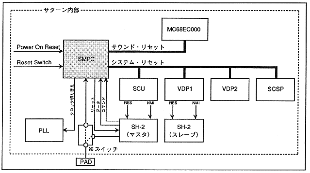

SMPC resets the entire Saturn system when the power is turned on or the reset button is pressed. In addition, commands from SH-2 turn on / off the Saturn internal peripheral LSI, set and get the calendar clock, and collect data from peripherals. Furthermore, the horizontal resolution is switched to 320 dots or 352 dots by the clock change command.
Figure 3.34 SMPC system configuration

(* Peripheral input / output terminals can also be controlled directly from the SH-2 side.)